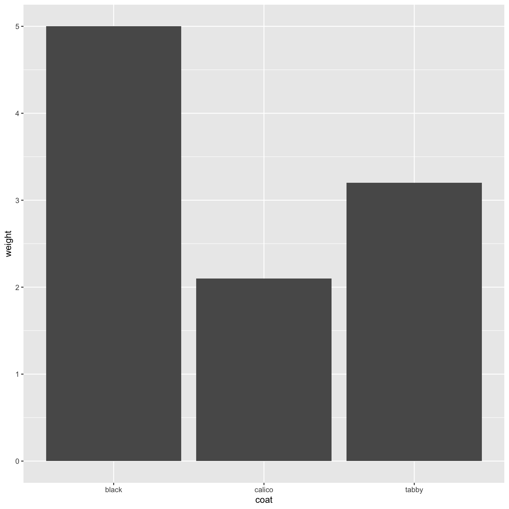

Chapter 10 Seeking Help from Others with reprex
If you’re having trouble using a function or package, or getting the syntax correct, 9 times out of 10 the answers you are seeking have already been asked and answered on-line:
- RStudio Community
- Stack Overflow. You can search using the [r] tag.
If you can’t find the answer on-line, there are some on-line forums to seek help from the bcgov R community:
10.1 Help People Help You - reprex
When starting a conversation about code, there are a few things that when included make that conversation more efficient and pleasant for everyone:
- some sample data (preferably provided in the code)
- some code (with comments, white-space, indents
==make it easy to read) - information about your computing environment, like your operating system, version of R, the packages you have loaded
reprex: An R package to help prepare a reproducible example — or reprex — for posting to GitHub issues, StackOverflow, RocketChat snippets, or email and so on.
# install.packages("reprex")
# load libraries we need
library(reprex)
library(readr)
library(dplyr)
library(ggplot2)
# read in data
cats <- read_csv(file = "data/feline-data.csv")
# munge data and make bar plot
cats %>%
select(coat, weight) %>%
ggplot(aes(x = coat, y = weight)) +
geom_col()
# error in syntax - this does not work
cats %>%
select(coat, weight) %>%
ggplot(aes(x = coat, y = weight)) %>%
geom_col()Error: `mapping` must be created by `aes()`
Did you use %>% instead of +?You have read the error message but it was not helpful, you used ?ggplot2, and looked on-line and still cannot find an answer. Maybe someone in the bcgovR community knows?
We need to invest a bit of time making the buggy code shareable – the easier it is for someone to run the code, the easier – and likely faster – someone might be able to provide some help.

If the data is shareable (e.g. available in the B.C. Data Catalogue with appropriate licence, publicly available) then we can use dput():
structure(list(coat = c("calico", "black", "tabby"), weight = c(2.1,
5, 3.2), likes_string = c(1, 0, 1)), class = c("spec_tbl_df",
"tbl_df", "tbl", "data.frame"), row.names = c(NA, -3L), spec = structure(list(
cols = list(coat = structure(list(), class = c("collector_character",
"collector")), weight = structure(list(), class = c("collector_double",
"collector")), likes_string = structure(list(), class = c("collector_double",
"collector"))), default = structure(list(), class = c("collector_guess",
"collector")), skip = 1), class = "col_spec"))cats <- structure(list(coat = c("calico", "black", "tabby"), weight = c(2.1,
5, 3.2), likes_string = c(1, 0, 1)), class = c("spec_tbl_df",
"tbl_df", "tbl", "data.frame"), row.names = c(NA, -3L), spec = structure(list(
cols = list(coat = structure(list(), class = c("collector_character",
"collector")), weight = structure(list(), class = c("collector_double",
"collector")), likes_string = structure(list(), class = c("collector_double",
"collector"))), default = structure(list(), class = c("collector_guess",
"collector")), skip = 1), class = "col_spec"))
# error in syntax - this does not work
cats %>%
select(coat, weight) %>%
ggplot(aes(x = coat, y = weight)) %>%
geom_col()Error: `mapping` must be created by `aes()`
Did you use %>% instead of +?dput() will dump the data you’re working with into a format so that it can
be copy and pasted by anyone else into their R session.
If the data is not shareable, you can use some built in data and re-create the issue:
# ?datasets # built in datasets
# ?starwars # ships with dplyr
# View(starwars)
# error in syntax - this does not work
starwars %>%
select(name, height) %>%
ggplot(aes(x = name, y = height)) %>%
geom_col()Error: `mapping` must be created by `aes()`
Did you use %>% instead of +?Once the code is ready for sharing, select the code and use reprex_selection() or the clickable RStudio Addin Reprex selection button to copy the formatted code to the clipboard for sharing on-line (demonstrated).
Sometimes it is useful to share information about your computing environment as well:
R version 4.0.0 (2020-04-24)
Platform: x86_64-apple-darwin17.0 (64-bit)
Running under: macOS Catalina 10.15.4
Matrix products: default
BLAS: /Library/Frameworks/R.framework/Versions/4.0/Resources/lib/libRblas.dylib
LAPACK: /Library/Frameworks/R.framework/Versions/4.0/Resources/lib/libRlapack.dylib
locale:
[1] en_US.UTF-8/en_US.UTF-8/en_US.UTF-8/C/en_US.UTF-8/en_US.UTF-8
attached base packages:
[1] stats graphics grDevices utils datasets methods base
other attached packages:
[1] reprex_0.3.0 bcdata_0.1.2 tidyr_1.0.2 dplyr_0.8.5 ggplot2_3.3.0
[6] readr_1.3.1 knitr_1.28
loaded via a namespace (and not attached):
[1] tidyselect_1.0.0 xfun_0.13 purrr_0.3.4 sf_0.9-2
[5] splines_4.0.0 lattice_0.20-41 colorspace_1.4-1 vctrs_0.2.4
[9] htmltools_0.4.0 yaml_2.2.1 mgcv_1.8-31 utf8_1.1.4
[13] rlang_0.4.6 e1071_1.7-3 pillar_1.4.4 glue_1.4.0
[17] withr_2.2.0 DBI_1.1.0 readxl_1.3.1 lifecycle_0.2.0
[21] stringr_1.4.0 munsell_0.5.0 gtable_0.3.0 cellranger_1.1.0
[25] evaluate_0.14 labeling_0.3 class_7.3-16 fansi_0.4.1
[29] highr_0.8 Rcpp_1.0.4.6 KernSmooth_2.23-16 scales_1.1.0
[33] classInt_0.4-3 fs_1.4.1 farver_2.0.3 hms_0.5.3
[37] digest_0.6.25 stringi_1.4.6 bookdown_0.18 grid_4.0.0
[41] cli_2.0.2 tools_4.0.0 magrittr_1.5 tibble_3.0.1
[45] crayon_1.3.4 pkgconfig_2.0.3 ellipsis_0.3.0 Matrix_1.2-18
[49] assertthat_0.2.1 rmarkdown_2.1 rstudioapi_0.11 R6_2.4.1
[53] units_0.6-6 nlme_3.1-147 compiler_4.0.0 sessionInfo() will print out your current version of R, as well as any packages you
have loaded. This can be useful to help reproduce and debug
your issue.